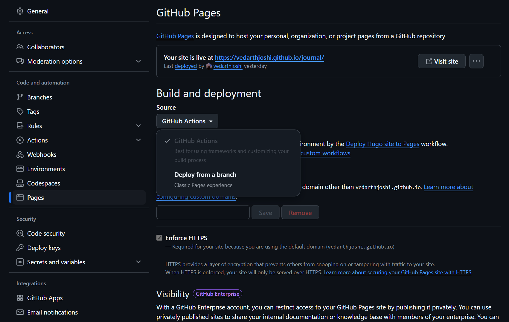
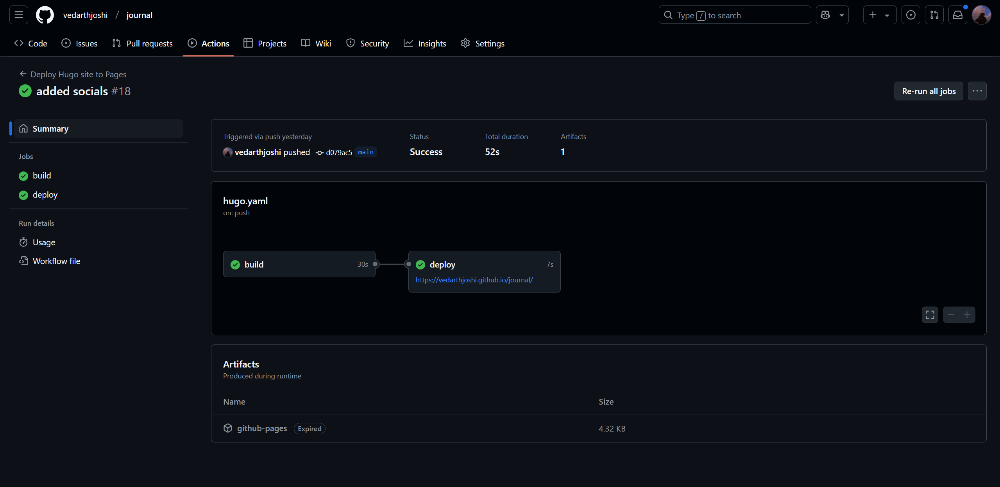

Start by installing HUGO (ofc)
https://gohugo.io/
https://gohugo.io/installation/
After installation you can verify if its working by typing
hugo version
Hope that shows something like this instead of error
hugo v0.143.1-0270364a347b2ece97e0321782b21904db515ecc+extendedwindows/amd64 BuildDate=2025-02-04T08:57:38Z VendorInfo=gohugoio
and I presume you have a git installed already just like a normal insane person who doesn’t wanna use blogger or medium but just in case
https://git-scm.com/downloads
so after that
go to the directory where you wish to create the website this command will make a root folder for itself so you just have to go somewhere like documents and create a template by writing
hugo new site epic-site-name
Now get into site directory
cd epic-site-name
And initialize git there
git init
You can now also switch to vs code or IDE that you use For vs code you can just type
code .
Now you have base setup so let’s see how to get something eye pleasing
Now we can create our own theme from scratch or with a basic template but for now you can go to
https://themes.gohugo.io/
now just like a professional blogger I am going to use a theme that is not in that whole list or maybe under a different name its called
https://github.com/niklasbuschmann/contrast-hugo
Remember every theme varies apart from basic ones so the theme you choose may have more steps unless its basic theme which is our case
So copy its link something like
https://github.com/niklasbuschmann/contrast-hugo.git
now go back to vs code and open its terminal ( Ctrl + Shift + ` )
cd themes
And here clone the repository you just copied
git clone https://github.com/niklasbuschmann/contrast-hugo.git
Now you can add git submodules for that repo by
cd themes
cd contrast-hugo
git submodule add https://github.com/niklasbuschmann/contrast-hugo.git themes/contrast-hugo
git submodule update --init --recursive
Now go back to main project dir by
cd ..
cd ..
and edit your hugo.toml file it should have something like
baseURL = 'https://example.org/'
languageCode = 'en-us'
title = 'epic-site-name'
Add one more line at the bottom
theme = 'contrast-hugo'
And you are done with all the preparations See your site without absolutely nothing but name of your site by typing
hugo server
As default it should open on link
http://localhost:1313/
you can see how your site would look like without any contents
now to add some blogs you can go back to that same terminal of your project and press Ctrl + C or just open another terminal at that path Now to add a new post/blog page just type
hugo new posts/my-first-epic-post.md
you can see that file under content/posts/my-first-epic-post.md
now finally in that my-first-post.md file you can write whatever you want you can customize what you want (lol) by learning how to use markdown language
https://www.markdownguide.org/
first change the draft to false
draft = false
for now if you just want to check you can write this under whatever content it contains
# THIS IS THE STUFF I WROTE
```java
Pubclic Static void main(String[] args) {
System.out.println("Hello World!");
}
And save it boom ur done you can run your site locally whenever you want by
hugo server
Now once you are done doing all this if you wish to publish it online you can create a git repository on github suppose this one would be called journal.
You can just follow their own steps here:
https://gohugo.io/hosting-and-deployment/hosting-on-github/
All steps are easy enough but just to make this guide complete. So after you test your site locally by
hugo server
You have to create a repository and push your local repository on github If you followed along by typing ls you will get below results apart from git modules
d----- 2/12/2025 9:41 PM .github
d----- 2/12/2025 9:25 PM archetypes
d----- 2/12/2025 9:25 PM assets
d----- 2/12/2025 9:30 PM content
d----- 2/12/2025 9:25 PM data
d----- 2/12/2025 9:25 PM i18n
d----- 2/12/2025 9:25 PM layouts
d----- 2/14/2025 3:08 AM public
d----- 2/12/2025 9:25 PM static
d----- 2/12/2025 10:05 PM themes
-a---- 2/12/2025 9:57 PM 124 .gitmodules
-a---- 2/12/2025 9:28 PM 0 .hugo_build.lock
-a---- 2/12/2025 10:04 PM 240 hugo.toml
-a---- 2/12/2025 9:40 PM 24 README.md
now push it on github and go to your repository in your browser
From the main menu choose Settings > Pages. In the center of your screen you will see this:

Change the Source to GitHub Actions. The change is immediate; you do not have to press a Save button.
Create a file named hugo.yaml in a directory named .github/workflows.
Now if you have simply followed along
Copy and paste the YAML below into the file you created.
if not change the branch name and Hugo version as needed.
# Sample workflow for building and deploying a Hugo site to GitHub Pages
name: Deploy Hugo site to Pages
on:
# Runs on pushes targeting the default branch
push:
branches:
- main
# Allows you to run this workflow manually from the Actions tab
workflow_dispatch:
# Sets permissions of the GITHUB_TOKEN to allow deployment to GitHub Pages
permissions:
contents: read
pages: write
id-token: write
# Allow only one concurrent deployment, skipping runs queued between the run in-progress and latest queued.
# However, do NOT cancel in-progress runs as we want to allow these production deployments to complete.
concurrency:
group: "pages"
cancel-in-progress: false
# Default to bash
defaults:
run:
shell: bash
jobs:
# Build job
build:
runs-on: ubuntu-latest
env:
HUGO_VERSION: 0.143.1
steps:
- name: Install Hugo CLI
run: |
wget -O ${{ runner.temp }}/hugo.deb https://github.com/gohugoio/hugo/releases/download/v${HUGO_VERSION}/hugo_extended_${HUGO_VERSION}_linux-amd64.deb \
&& sudo dpkg -i ${{ runner.temp }}/hugo.deb
- name: Install Dart Sass
run: sudo snap install dart-sass
- name: Checkout
uses: actions/checkout@v4
with:
submodules: recursive
fetch-depth: 0
- name: Setup Pages
id: pages
uses: actions/configure-pages@v5
- name: Install Node.js dependencies
run: "[[ -f package-lock.json || -f npm-shrinkwrap.json ]] && npm ci || true"
- name: Build with Hugo
env:
HUGO_CACHEDIR: ${{ runner.temp }}/hugo_cache
HUGO_ENVIRONMENT: production
TZ: America/Los_Angeles
run: |
hugo \
--gc \
--minify \
--baseURL "${{ steps.pages.outputs.base_url }}/"
- name: Upload artifact
uses: actions/upload-pages-artifact@v3
with:
path: ./public
# Deployment job
deploy:
environment:
name: github-pages
url: ${{ steps.deployment.outputs.page_url }}
runs-on: ubuntu-latest
needs: build
steps:
- name: Deploy to GitHub Pages
id: deployment
uses: actions/deploy-pages@v4
Now all you have to do is push it again on Github
git add -A
git commit -m "Create hugo.yaml"
git push
From GitHub’s main menu, choose Actions. You will see something like this:

When GitHub has finished building and deploying your site, the color of the status indicator will change to green.
Under the deploy step, you will see a link to your live site.
Now with this everytime you add a new blog or post you can just push it on your repo and GitHub will rebuild your site and deploy the changes.
if you want to automate this process as well you can make a batch script if you are on windws or you could use a shell/bash script if you are on linux or macos
in windws create a file in your project called publish.bat
and put the following code in it
@echo off
setlocal enabledelayedexpansion
:: Navigate to the script directory (Git repo folder)
:: Pull latest changes
echo Pulling latest changes...
git pull
:: Add all changes
git add .
:: Ask for commit message
set /p msg="Enter commit message (or press Enter for default): "
:: Use default message if none provided
if "%msg%"=="" (
:: Check if count file exists, else create one
if not exist commit_count.txt (
echo 1 > commit_count.txt
)
:: Read commit count
set /p count=<commit_count.txt
:: Increment commit count
set /a count+=1
echo !count! > commit_count.txt
:: Use default commit message
set msg=Auto commit #!count!
)
:: Commit changes
git commit -m "!msg!"
:: Push changes
echo Pushing to GitHub...
git push
echo Done!
pause
now everytime you created a new blog or post you can just run this script and it will push the changes to your repo and GitHub will rebuild your site and deploy the changes.